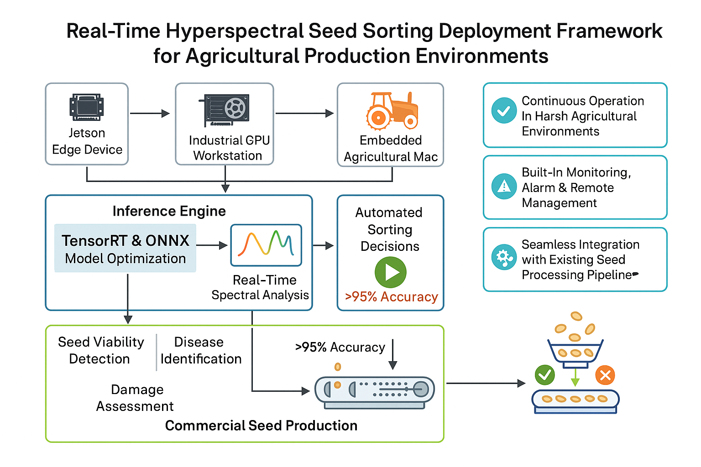
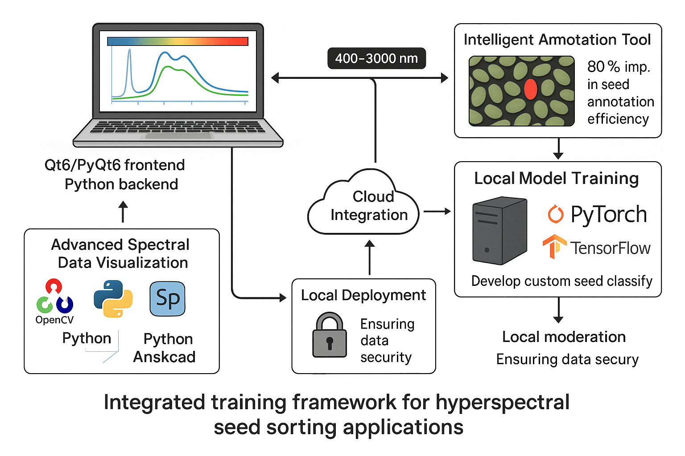

图1：高光谱智能分选系统完整架构设计
种子质量检测与智能分选解决方案
高光谱成像技术作为一种先进的光学检测手段，能够同时获取目标的空间信息和光谱信息，在农业种子质量检测领域具有巨大应用潜力。传统的种子分选方法主要依赖人工目视检测和简单的物理特性分析，存在检测精度低、效率低下、主观性强等问题。
随着精准农业和智能制造的快速发展，对种子质量检测的自动化、智能化和精准化提出了更高要求。高光谱技术能够检测种子内部化学成分、水分含量、病害情况等肉眼无法观察到的特征，为种子质量评估提供了全新的技术手段。
本项目旨在开发一套完整的高光谱智能分选系统，集成先进的机器学习算法和实时数据处理能力，实现种子质量的自动化检测和智能分选，为农业生产提供可靠的质量保障工具。
系统采用分层架构设计，集成数据采集、处理、分析和控制等核心模块，实现从高光谱数据采集到智能分选决策的完整流程。系统分为训练框架和部署框架两个核心模块，支持从数据标注到模型训练再到生产部署的完整工作流程。

高光谱相机、光源系统、传送带控制
光谱预处理、特征提取、数据增强
深度学习模型、分类算法、决策系统
执行器控制、分选逻辑、实时监控
提供完整的数据标注、模型训练和优化环境，支持多种深度学习框架和算法，帮助用户快速构建高精度的种子分类模型。
训练框架专为高光谱种子分选应用设计，集成了先进的光谱数据可视化、智能标注工具和本地模型训练功能。软件参考perClass Mira的成熟架构，结合现代深度学习技术，为农业研究人员和技术人员提供完整的高光谱种子数据处理解决方案。

部署框架为农业生产环境中的实时高光谱种子分选提供流线型解决方案，提供多平台部署能力，包括Jetson边缘设备、工业GPU工作站和嵌入式农业机械系统。
Jetson Nano/Xavier、树莓派等边缘设备
工控N卡设备、工业PC等高性能平台
AWS、Azure、阿里云等云平台
iOS、Android移动应用
检测种子活力、病虫害、破损率，支持多种作物种子，提高种子质量和发芽率。
检测异物污染、品质分级、营养成分分析，涵盖水果、蔬菜、肉类等食品类别。
作物长势监测、病虫害识别、产量预测，支持无人机和卫星高光谱数据处理。
表面缺陷检测、材料成分分析、涂层厚度测量，适用于半导体、纺织、涂料等工业领域。
光谱分辨率：0.1nm，空间分辨率：1000×1000×500像素，标注效率提升80%，分选准确率超过95%
| 参数 | 指标值 | 说明 |
|---|---|---|
| 波长范围 | 400nm - 3000nm | 覆盖可见光到近红外 |
| 光谱分辨率 | 0.1nm | 高精度光谱分析 |
| 空间分辨率 | 1000×1000×500 | 支持大规模数据处理 |
| 标注效率提升 | 80% | 智能算法辅助标注 |
| 分选准确率 | >95% | 高精度种子分类 |
本软件为高光谱数据处理领域提供了从数据标注到模型训练再到生产部署的完整解决方案，特别适用于农业、食品、工业、科研等领域的质量检测和分类任务。通过集成先进的机器学习和计算机视觉技术，显著提高了高光谱数据处理的效率和准确性。
软件采用模块化设计，具有良好的扩展性和维护性，支持团队协作和云端集成，能够满足不同规模和需求的用户群体。其本地化部署特性确保了数据安全和隐私保护，同时云端模型仓库为用户提供了丰富的预训练模型资源。